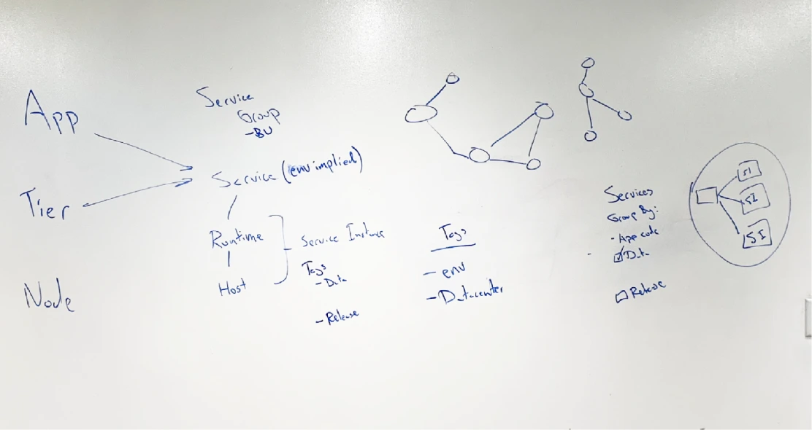
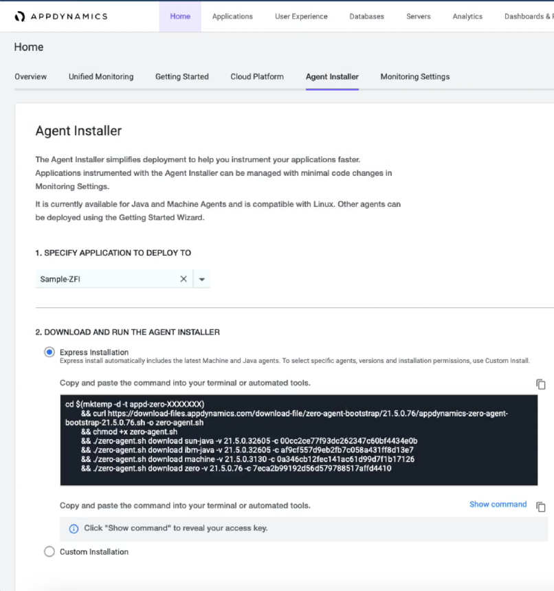
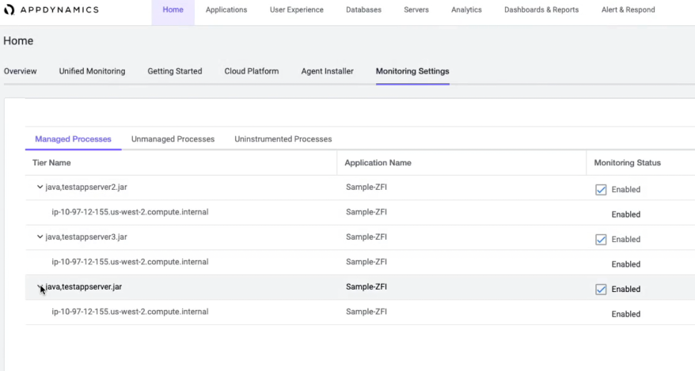

- Enterprise observability
- Discovery & definition
- Onboarding
We lost real money because our software was too hard to turn on
- Client
- AppDynamics · Cisco
- Delivered
- Competitive analysis, workshops, prototyping, narrative
The brief
AppDynamics is like an alarm system — it watches your code and tells you when something breaks. The watching is done by “agents,” little programs you install on the servers where your code lives. One agent per programming language.
Installing them was miserable. Hundreds of steps. Each agent downloaded one at a time, and every agent mapped by hand to an app and a tier before it could be deployed — which meant inventing a naming scheme for your entire company before you could monitor anything. One customer spent six months on the naming alone.
Most people don’t have one copy of their app, either. They have a few, running in different environments on different servers, for testing and for security. So multiply all of that by however many servers you’ve got. Some companies have thousands of apps across hundreds of them.
In 2018 we lost significant contracts over it. It was one of the loudest complaints we heard, and people were leaving for Dynatrace, who had already figured out how to do it with a single agent. So I knew it was possible. The question was what it would take for us to do better.
Meet Aparna
Aparna works on a DevOps team. She started as an IT admin and brought that with her, writing Python scripts to automate the tedious parts of standing up a system nobody planned in advance. She likes that every day is different. She likes being in control of a complicated landscape, and she likes sharpening her own tools.
What she doesn’t like is routine work. Agent install was routine work she couldn’t automate, and it usually ended with her calling our support team to get through it.
My role
I ran discovery and definition. That meant the competitive analysis, the engineering interviews, the strategy workshop with the PM and lead engineer, the first flows and wireframes, the narrative, and the presentations to executives and to our annual product kickoff. Two product designers from my team came in once the concept held up, and one of them carried it into development alongside the PM.

Working backwards from the best version
I partnered with the lead Product Manager and we started at the end. What’s the best possible version of this, and what would it take to make it real? Starting from the current experience would only get us a slightly less painful version of the same thing.
Someone else already did it
I wanted to know where the industry actually was, so we looked at Dynatrace and New Relic. I poured over the technical documentation, reading it the way a customer would, hunting for the seams. Dynatrace had single-agent installation. That settled the question of whether it was possible and turned it into a question of what we’d have to change.
The engineer had my ear
One of our engineers reframed the whole thing for me: underneath, this is a grouping and sorting exercise. People have objects — processes — running inside a virtual host environment, sitting on a physical server. Those processes need to be grouped into apps and tiers so they can be monitored. That’s it. Everything painful about install came from making a human do that grouping by hand, up front, in a naming convention, before the software had seen a single thing.
Goals
Reduce manual effort — the installer detects which processes are running and proposes whether they should be monitored. Make the interface say what it means: clear instructions, human-readable names, no decoder ring. Cut time to setup — install multiple agents in fewer steps, without leaving the screen you’re on.
We were asking the customer to describe something the agent could just look at
Categorizing the dream
Once I had a working knowledge of the problem, the PM and I sat down with a lead engineer and workshopped it. I wanted the vision grounded in something real, not a pretty picture we’d have to walk back. The question we kept circling: could we bundle the agents into a single package that lands on the host, detects everything running, and proposes how it should be grouped? Could it suggest names a human would recognize, instead of asking for a naming scheme?
Tagging. From observational inquiries we knew people needed to tell their host environments apart — by service, by application, by business unit, by geography, by environment, by whatever they cared about that week. A naming convention was how they’d been doing it, badly. So we landed on tags. The agent detects the processes, suggests the apps and tiers they belong to, suggests the tags, and hands you a list you can actually read. You pick what you want to monitor. Next server, it already knows more than it did.
Mapping the possibilities. Once agents start reporting, they draw themselves onto a topology we call the flow map. I wondered whether we could pull that into the install itself — you finish, and instead of a success message you see your environment appear, connected, proof that it worked.
The grounded version. Underneath the dream was something small enough to defend: one package, called the agent installer, and two commands you copy and paste onto the target host. From there you go to the UI, see everything that can be instrumented in plain language, and toggle it on. I pulled in the product designers on my team and we started wireframing while engineering built a proof of concept. We revised the wireframes, fleshed out the concepts, and built a prototype. I wrote the narrative around it and presented it to executive leadership, then presented it again with the lead PM to the room at our annual product kickoff.
Then reality showed up
Coming out of the conference we had two problems. Nobody was confident the flow map would perform at the scale our customers run at. And tagging — the thing the whole dream hung on — wasn’t something the current tech stack could support. When engineering’s proof of concept came back, we had a real picture of what was possible now versus what was possible eventually.
So I asked the team to show me the experience without the flow map and without tagging. Not as a fallback to keep in a drawer, as the thing we would actually build. The PM started scoping requirements against it.
This is the part I’d point to if you asked me what I’m useful for. I’d spent months selling a vision, and the most valuable thing I did was cut two of its best ideas out and ship the part that was true today. The vision didn’t disappear — it became the reason the roadmap pointed where it did. It just stopped holding the release hostage.
Three steps instead of hundreds
What we built is a guided setup that opens with a line about being a few steps away, and then means it.
01 — Specify the application to deploy
Pick your platform — AWS, Azure, Google Cloud, Kubernetes, containers, Linux, Red Hat, serverless — and name the application.
02 — Download the installer
One package, not one agent at a time.
03 — Restart processes
Done.
Each step carries its own progress, so you always know how much is left. The platform picker is a search field with a short list behind it, because people know what they’re running and shouldn’t have to hunt for it in a menu.
- 2 commands
- Copied and pasted onto the target host — the whole install
- 3 steps
- Down from hundreds, with progress shown per step
- 2 agents
- Machine Agent and Java bundled, with four more behind them
- 10%
- Adoption lift the team went into beta watching, alongside hours to deployment


Research told us we’d solved the wrong half
With a prototype in hand we partnered with the UX Research team and ran a usability study with four participants. It tested high on ease of use and relatively low on expected functionality. Which is a polite way of saying: yes, this is easier, and no, it will not survive contact with my environment.
The concern was scale. People wanted to search, filter, and save filter sets. Pagination confused them. And they wanted visibility into agent upgrades — specifically, they wanted upgrades to happen without them.
My team revised the mockups against what we heard. They improved search and filtering, and built a real pagination solution instead of the one we’d waved at. Filtering went on the left, pagination in the bottom right, where people went looking for them. And through the partnership with engineering we learned automatic upgrades were actually on the table. The thing users asked for loudest turned out to be the thing we could give them.
What shipped
The team built and launched a limited beta in iterative cycles. It bundled two agents — Machine Agent and Java, our two most popular — with .Net, Node.js, Windows, and Linux behind them. It included the first version of automatic tier naming, automatic upgrades, and the ability to instrument all or a subset of the processes on a host.
Two agents instead of six. No tagging. No flow map. But you could turn the thing on by pasting two commands and clicking through three steps, and it upgraded itself afterward.
The team went into beta watching two numbers: a 10% lift in adoption, and a drop in hours to deployment, which at that point was still over two hours. I’d be doing you a favor and myself a disservice if I told you I know where those numbers landed — I moved on before general release, and tagging was still waiting on the stack when I did.
Back to workWhat I’d do differently
I fell in love with the flow map. It was the most beautiful part of the vision and the least necessary, and I spent time on it that would have been better spent on scale — the exact thing research came back and hit us with. Four participants told me in an afternoon what I could have anticipated by taking “thousands of apps across hundreds of servers” seriously the first time I heard it.
I’d also have pushed harder on the two commands earlier. That was the real idea. Everything else was decoration on top of it, and the sooner we said so out loud, the sooner the scope argument would have resolved itself.
Agent install doesn’t have to be a painstaking manual process. It turned out not to be an instructions problem or a documentation problem — it was us asking a person to describe something the software was already standing on top of and could see for itself. Once we stopped doing that, it took two commands.